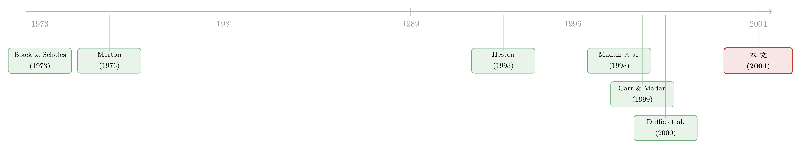

把「跳跃、波动、杠杆」三件事，交给一只会变速的钟
本文读的是 Carr & Wu (2004, Journal of Financial Economics)：他们用「被随机时间改写过的列维过程」(time-changed Lévy process) 同时装下了资产收益中的三件怪事——跳跃、随机波动、以及收益与波动的负相关（杠杆效应）。更妙的是，他们引入了一个复值测度（命名为「杠杆中性测度」），把原本纠缠在一起的两重随机性一刀切开，让一个本来很难算的特征函数，退化成一道我们早就会解的「债券定价公式」。这套框架几乎囊括了此前期权定价文献里的所有主流模型。
1 引言：Black-Scholes 错在哪三个地方
凡是对衍生品定价有点兴趣的人，都绕不开 Black-Scholes 公式。它的全部出发点只有一句话：股票收益服从布朗运动 (Brownian motion)。布朗运动美在它干净——增量独立、正态分布、连续无跳。可惜，真实世界的收益序列，几乎在每一个能被检验的维度上都跟这个基准过不去。
文献里反复出现的「背叛」有三条，而且无论是在统计测度还是风险中性测度下都顽固地存在：
- 第一，价格会跳。 收益的创新项 (innovation) 不是正态的，尾巴更厚、峰更尖。
- 第二，波动率是随机的。 它自己会随时间起伏，时大时小。
- 第三，收益和它的波动率是相关的，对股票而言往往是负相关。 跌的时候波动放大——这就是 Black (1976) 最早讨论的「杠杆效应」(leverage effect)。
过去二十年，文献基本是「头痛医头、脚痛医脚」：要捕捉跳跃，就往布朗运动上叠一个泊松跳；要捕捉随机波动，就再挂一个均值回复的方差过程；要捕捉杠杆效应，就让方差的布朗驱动和价格的布朗驱动相关起来。模型越堆越复杂，但骨架始终是 Heston (1993) + Merton (1976) 那一套。
于是一个自然的问题是：能不能用一个统一的、足够简洁的语言，把这三件事一次性地、参数化地说清楚？ Carr 和 Wu 的回答是：能——只要你愿意把「时间」也当成一个随机的东西来对待。
2 一个核心比喻：让钟自己变速
这篇论文的全部直觉，可以压缩成一句话：收益过程 = 一个列维过程，被一只走得忽快忽慢的钟重新计时。
先说列维过程 (Lévy process)。粗略地讲，它是连续时间里「增量平稳且独立」的随机过程，相当于离散世界里的 iid 创新。布朗运动是它，Merton (1976) 跳扩散里的复合泊松 (compound Poisson) 也是它。布朗运动给出正态创新，而一个纯跳的列维过程可以给出各种非正态的创新——第一件事（跳跃、非正态）就这样被装进了列维过程本身。
接着，一个自然的问题是：波动怎么办？Carr-Wu 的办法非常优雅——不去改列维过程，而去改它运行的「钟」。把日历时间 \(t\) 换成一个随机的「业务时间」(business time) \(T_t\)：业务越活跃，钟走得越快，单位日历时间里积累的随机性就越多，波动也就越大。业务活跃度本身是随机的，于是波动率的随机性，就来自这只钟的随机变速——第二件事被装进了时间变换。
然后，真正关键的一步在于第三件事。怎么制造收益和波动的相关？很简单：让这只钟的快慢，和列维过程自己的跳动相关起来。 当相关为负时，列维过程往下走的时候钟恰好跑得更快——这正是杠杆效应的样子。
把三件事对号入座之后，定义就水到渠成。设 \(X_t\) 是一个 \(d\) 维列维过程（\(X_0=0\)），由列维三元组 \((m, \Sigma, \Pi)\) 刻画：\(m\) 是漂移，\(\Sigma\) 是连续部分的协方差，\(\Pi\) 是描述各种跳跃幅度到达率的列维测度。由列维-辛钦定理 (Lévy-Khintchine Theorem)，它的特征函数有如下形式：
$$\phi_{X_t}(\theta) \equiv E[e^{i\theta \cdot X_t}] = e^{-t\,\psi_x(\theta)}, \qquad t\ge 0,$$
其中特征指数 (characteristic exponent) \(\psi_x(\theta)\) 为
$$\psi_x(\theta) = -\,i\,m\cdot\theta + \tfrac{1}{2}\,\theta\cdot\Sigma\,\theta + \int_{\mathbb{R}^d_0}\!\big(1 - e^{i\theta\cdot x} + i\,\theta\cdot x\,\mathbf{1}_{|x|<1}\big)\,\Pi(dx).$$
再把随机时间引进来。设 \(T_t\) 是一个递增、右连续的过程，且为了不失一般性归一化为 \(E[T_t]=t\)（业务时间是日历时间的无偏映照）。论文把它写成一个局部确定的形式：
$$T_t = \int_0^t v(s_-)\,ds,$$
这里 \(v(t)\) 是瞬时业务活跃度 (instantaneous activity rate)，必须非负（否则钟会倒走）。最后，被改写过时间的过程就是
$$Y_t \equiv X_{T_t}, \qquad t\ge 0,$$
我们用它来描述经济体的不确定性（比如某资产的对数收益）。换不同的列维三元组、配不同的活跃度过程，就能批量生产出一大堆随机过程。Heston (1993) 不过是「布朗运动 + 均值回复平方根活跃度」的特例；Duffie, Pan & Singleton (2000) 的仿射跳扩散，则是「复合泊松跳 + 满足仿射约束的活跃度」的特例。
这里的「volatility / 波动」是个一般化的词，指代经济体里那种不确定性的强弱，不是统计意义上收益的标准差。当 \(X_t\) 是布朗运动时，活跃度正比于瞬时方差率；当 \(X_t\) 是纯跳过程时，活跃度正比于跳跃的列维密度。
3 难点：两重随机性纠缠在一起
模型搭好了，但定价要靠特征函数。麻烦也正在这里：\(Y_t = X_{T_t}\) 是「一个随机过程，在一个随机的时间点上取值」，它的特征函数要对两重随机性同时积分：
$$\phi_{Y_t}(\theta) \equiv E\big[e^{i\theta\cdot X_{T_t}}\big] = E\Big[\,E\big[e^{i\theta\cdot X_u}\,\big|\,T_t = u\big]\Big].$$
如果钟和列维过程相互独立，事情很简单：里层期望对 \(X\) 积分时可以直接用列维-辛钦的结果，于是
$$\phi_{Y_t}(\theta) = E\big[e^{-T_t\,\psi_x(\theta)}\big] = \mathcal{L}_{T_t}\big(\psi_x(\theta)\big).$$
读到这里要停一下，因为这一步是全文的「定盘星」：独立情形下，被改写时间的过程的特征函数，就等于随机时间 \(T_t\) 的拉普拉斯变换 (Laplace transform)，在列维过程的特征指数处取值。 而 \(T_t\) 的拉普拉斯变换
$$\mathcal{L}_{T_t}(\lambda) \equiv E\Big[\exp\Big(-\lambda\!\int_0^t v(s_-)\,ds\Big)\Big]$$
——如果你把 \(\lambda v(t)\) 看成瞬时利率，这恰恰就是债券定价公式！于是利率期限结构那一整套成熟工具（CIR、仿射、二次类……）都能直接搬过来给活跃度建模。
但真正棘手的，是相关情形。一旦钟和列维过程相关，收益分布就有了非对称性，特征函数必然带上一个非零的虚部，上面那种「先对 \(X\) 积分、再对 \(T\) 积分」的迭代期望就不再成立——因为 \(X\) 和 \(T\) 不再能干净地拆开。
于是问题变成：能不能想个办法，既保留「债券定价公式」这个漂亮的归约，又能制造出非对称所需要的那个虚部？ 这就是论文的核心一跃。
4 关键一步：用一个复值测度，把杠杆「吸收」掉
Carr-Wu 的答案带着一点数学上的「胆大妄为」：既然特征函数活在复平面上，那就允许我们换到一个复值的测度上去做期望。当我们用复的权重（而不是实的权重）去给实值随机变量加权平均，得到的结果自然就带上了虚部——正好对应那个非对称的分布。
这就是全文的主定理。它说：在原始测度 \(P\) 下求 \(Y_t\) 的（广义）特征函数，可以归约成在一个复值测度 \(Q(\theta)\) 下求随机时间的拉普拉斯变换。
其中复值测度族 \(Q(\theta)\) 通过如下 Radon-Nikodym 导数定义，它关于 \(P\) 绝对连续：
$$\left.\frac{dQ(\theta)}{dP}\right|_t = M_t(\theta), \qquad M_t(\theta) \equiv \exp\big(i\,\theta\cdot Y_t + T_t\,\psi_x(\theta)\big),\quad \theta\in D.$$
这是论文的方法论核心贡献。它的精神和「风险中性测度」如出一辙：风险中性测度把定价核与payoff之间相关性带来的麻烦一笔勾销，让你「假装风险中性」地算期望；而这个复值的杠杆中性测度 (leverage-neutral measure)，则把列维过程与随机时间之间相关性带来的麻烦一笔勾销，让你「假装没有杠杆效应」地算期望。风险厌恶被埋进了风险中性概率里，杠杆效应被埋进了杠杆中性测度里。
4.1 证明：Wald 鞅，一步步来
主定理的证明出奇地短，关键全压在一个引理上：要证 \(M_t(\theta)\) 是一个鞅。
第一步，先看一个不带时间变换的对象。 定义
$$Z_t(\theta) \equiv \exp\big(i\,\theta\cdot X_t + t\,\psi_x(\theta)\big).$$
由于 \(\psi_x(\theta)\) 有限，\(E[|Z_t(\theta)|] \le \exp(t\,\psi_x(\theta))\) 也有限。对 \(0\le s< t\)，利用列维过程增量独立、平稳的性质：
$$E\big[e^{i\theta\cdot(X_t - X_s) + \psi_x(\theta)(t-s)}\,\big|\,\mathcal{F}_s\big] = e^{-\psi_x(\theta)(t-s) + \psi_x(\theta)(t-s)} = 1.$$
也就是说，\(Z_t(\theta)\) 是一个关于 \(\{\mathcal{F}_t\}\) 的复值 \(P\)-鞅。这其实是经典的 Wald 鞅（指数鞅）在复平面上的推广。
第二步，把鞅停在随机时间上。 对每个固定的 \(t\)，\(T_t\) 是一个有限的停时 (stopping time)。由可选停时定理 (optional stopping theorem)，\(M_t(\theta) \equiv Z_{T_t}(\theta)\) 也是一个鞅——只不过参照系换成了由 \(\{(Y_t, T_t)\}\) 生成的滤波。这就是引理 1。
第三步，主定理几乎是顺手就出来了。 在被求期望的指数上，凑出一个「加一项、减一项」的恒等变形：
$$E\big[e^{i\theta\cdot Y_t}\big] = E\big[e^{i\theta\cdot Y_t + T_t\psi_x(\theta) - T_t\psi_x(\theta)}\big] = E\big[M_t(\theta)\,e^{-T_t\psi_x(\theta)}\big] = E^{\theta}\big[e^{-T_t\psi_x(\theta)}\big].$$
最后一个等号，正是用 \(M_t(\theta)\) 作为测度变换的密度，把 \(P\) 下的期望换成 \(Q(\theta)\) 下的期望。证毕。
注意一个漂亮的自洽性：当 \(T_t\) 与 \(X_t\) 独立时，\(T_t\) 在 \(P\) 和 \(Q(\theta)\) 下服从同一个过程，于是 \(\mathcal{L}^{\theta}_{T_t} = \mathcal{L}_{T_t}\)，主定理自动退回第 3 节那个独立情形的结果。换句话说，没有杠杆效应时，根本不需要换测度。 测度变换只在「原始经济体确实带杠杆」时才出手，且只做一件事：把相关性吞进测度里。
5 装上资产、风险溢价与 FFT
有了特征函数这把钥匙，剩下的就是开几把锁。
资产价格建模。 设资产价格是不确定性 \(Y_t\) 的指数仿射函数，\(S_t = S_0\, e^{W^\top Y_t}\)。在风险中性测度下，为保证无套利，论文用 Doléans-Dade 指数 (Doléans-Dade exponential) 把价格项写成一个均值为一的鞅：
$$\mathcal{E}(W^\top Y)_t = \exp\big(W^\top Y_t + T_t\,\psi_x(-iW)\big),$$
由引理 1 知其均值为一。于是对数收益 \(s_t \equiv \ln(S_t/S_0)\) 的广义傅里叶变换可由主定理直接写出，是 \(r,q,\psi_x,\mathcal{L}^\theta_{T_t}\) 的组合。
风险溢价。 论文梳理了文献分析市场风险价格的三条路线：一是从一般均衡和效用函数出发推导（Bates, 1996, 2000）；二是直接设定定价核 (pricing kernel)，用它把标的与衍生品的定价连起来（Pan, 2002; Eraker, 2001）；三是非参数地逐状态估计定价核。框架本身对这三条路都开放。
FFT 定价。 Heston (1993) 用列维反演公式数值地给欧式期权定价；Carr & Madan (1999) 则把期权价格的傅里叶变换和特征函数解析地联系起来，从而能用快速傅里叶变换 (fast Fourier transform, FFT) 大幅提速。Carr-Wu 把这套做法推广到一大类或有权益 (state-contingent claims)，并指出：特征函数自变量该取在复平面的哪个区域，取决于payoff的具体结构——他们为各种payoff识别出了可行域。这一步看似工程，却是让「一大批模型能被实证检验」的关键，因为数值估值足够快，你才跑得动模型选择与参数估计。
（关于「把看不见的波动率／潜在状态，换一种数学语言就能追踪并估计」，这条思路和《看不见的波动率，换一种「语言」就追到了》里的仿射框架是同源的；而「价格里到底是不是真有跳」这个经验问题，可参见《明明长得一模一样，为什么高频数据能一眼认出「跳跃」？》。）
6 文献脉络：两条河如何汇成一条
把镜头拉远，这篇论文坐落在期权定价文献两条主流河道的交汇处。
源头是 Black & Scholes (1973)——布朗运动、连续、正态。但价格会跳，于是 Merton (1976) 把复合泊松跳叠了上去；波动是随机的，于是 Heston (1993) 用均值回复的平方根过程给方差建模。第一条河沿着这个方向流下来：Bakshi, Cao & Chen (1997)、Bates (1996, 2000)、Pan (2002)，最后被 Duffie, Pan & Singleton (2000) 用「仿射跳扩散」(affine jump-diffusion) 一统江湖——状态变量驱动收益与方差，泊松跳的到达率可以是状态的仿射函数。这条河的局限在于：它只用复合泊松来建模跳，而后者在有限时间里只产生有限个跳（finite activity）。
但数据显示，资产价格在精细时间尺度上有无数个小跳。于是有了第二条河：允许有限时间内无穷多次跳的「无限活跃」(infinite activity) 模型——Barndorff-Nielsen (1998) 的逆高斯、Eberlein et al. (1998) 的广义双曲、Madan, Carr & Chang (1998) 的方差伽马 (variance-gamma, VG)、Carr et al. (2002) 的 CGMY，以及 Carr & Wu (2003) 的有限矩对数稳定模型。这条河擅长刻画跳，但在加入随机波动时，往往假设波动变化与收益独立，只在特殊情形下才碰杠杆效应。

而沿着 Heston (1993) 之后，两条河不约而同地都把目光投向了特征函数——它和概率密度一一对应，且常常在解析上比密度更简单。Bakshi & Madan (2000) 甚至给了它一个经济学解释：把复指数当成张成payoff空间的另一组基，特征函数就是「payoff 为正弦波的那种或有权益」的价格。
Carr & Wu (2004) 站的位置，就是把这两条河同时收编：它放松了 Duffie et al. (2000) 的仿射要求、允许更一般的跳结构，又让无限活跃列维模型里的波动可以与收益任意相关。一句话——它从一个更高的视角同时俯瞰两条河，于是既抓住了高跳跃活跃度，又抓住了杠杆效应。
7 评论与延伸（Q&A + 研究方向）
(a) 几个可能的疑问
Q：「复值测度」是不是只是个数学把戏？它有没有真实的经济含义？
两面都有。从纯技术看，它确实是为了制造特征函数所需的虚部而引入的工具。但论文有意把它类比成风险中性测度：风险中性测度让你「假装风险中性」，复值的杠杆中性测度让你「假装没有杠杆」。它的经济内容就是——把收益与波动之间相关性的全部后果，打包塞进测度的 Radon-Nikodym 导数里。所以它既是工具，也是一种「相关性被定价」的表述。
Q：这个框架号称「囊括几乎所有模型」，那它有没有可能因为太一般而失去检验力？
不必担心。框架的一般性体现在「设定空间」很大，但任何一个具体模型仍是其中一个可被点名、可被估计的特例（Heston、Duffie-Pan-Singleton、VG、CGMY……都是）。论文的卖点恰恰是：借助特征函数 + FFT，挑一个特例、估它、检验它，在计算上变得很便宜。 一般性在这里不是模糊，而是给了你一张能逐一对照检验的菜单。Huang & Wu (2003) 随后就做了这件事——对一族被改写时间的列维模型做设定分析。
Q：和 Duffie, Pan & Singleton (2000) 的仿射框架相比，本文到底「多」了什么？
多了两样关键的东西。其一，跳不再被限制为复合泊松（有限活跃），可以是无限活跃的列维过程；其二，活跃度过程 \(v(t)\) 不必满足仿射约束。仿射框架是这套框架在「复合泊松跳 + 仿射活跃度」下的特例。代价是：你失去了仿射那种封闭、统一的 Riccati 方程解法，要逐个模型去求拉普拉斯变换。
Q：为什么独立情形会退化成「债券定价公式」？这个类比是不是太巧了？
不巧，是结构使然。随机时间的拉普拉斯变换 \(E[\exp(-\lambda\int_0^t v(s)ds)]\) 在形式上和「贴现因子 \(E[\exp(-\int_0^t r(s)ds)]\)」完全一样，只要把 \(\lambda v(t)\) 读成瞬时利率。而瞬时利率和瞬时活跃度都必须非负、都能用同类过程建模。所以利率期限结构那套工具是「现成的、免费的」——这正是论文让活跃度建模事半功倍的地方。
Q：杠杆效应在这个模型里到底是怎么「长」出来的？
来自一个相关性：让随机时钟的变速（活跃度的创新）与列维过程的创新相关。当这个相关为负时，列维过程下跌之际钟跑得更快、波动放大——这就复现了股票市场里「跌得越狠、波动越大」的经验规律。注意这是把杠杆建模成「收益与时间变换的相关」，而不是传统做法里「价格布朗与方差布朗的相关」，但二者在合适设定下是相通的。
Q：这套方法只能定欧式期权吗？
不止。论文明确把 Carr & Madan (1999) 的 FFT 表述推广到一大类或有权益，并指出特征函数自变量该落在复平面的哪个可行域，取决于payoff结构。它还呼应了把 FFT 用于价差期权 (Dempster & Hong, 2000) 和亚式期权 (Benhamou, 2000) 的工作。
(b) 几个可能的研究问题与提案
1. 把这套时间变换框架搬到公司债 / 信用利差上。 【经济故事】信用利差同样有跳（违约、降级）、有随机波动、且与利率/股票收益相关。把违约强度看成一个「列维过程 + 随机时钟」，能否比经典的强度模型更简洁地捕捉信用利差的厚尾与杠杆？ 【可行性】中。数据（TRACE 成交、CDS 报价）齐备，特征函数技术可直接复用；难点在于违约是吸收态，时间变换的归一化与停时处理要小心。
2. 用 CDS 期权 / 信用指数期权来识别「杠杆中性测度」的虚部。 【经济故事】杠杆中性测度的全部内容就是收益-波动相关性。信用市场里，价差与价差波动的相关方向未必和股票一致。能否反推出信用市场的「杠杆」符号与量级，并和股票市场对照？ 【可行性】中偏低。需要流动的信用期权数据，样本相对稀薄；识别依赖足够丰富的隐含波动曲面。
3. 外资持有人结构与「业务时钟」的快慢。 【经济故事】如果把活跃度 \(v(t)\) 解读为「信息到达 / 交易强度」，那么外资比例高的债券，其业务时钟是否系统性更「抖」（活跃度方差更大）？这能把流动性、信息与波动的关系，翻译成一个可估计的时间变换参数。 【可行性】中。需要持有人层面的面板（如 eMAXX）与高频成交数据；识别可借助外资准入的外生变化作工具。
4. 把活跃度过程换成无限活跃的列维子过程 (Lévy subordinator)，比较拟合。 【经济故事】论文允许活跃度本身带跳。一个直接的实证问题是：相比 Heston 式的连续平方根活跃度，带跳的活跃度能否更好地解释波动率的「突跳」与期权曲面的短期陡峭？ 【可行性】高。纯计量练习，标的期权数据丰富，FFT 估计成熟，唯一成本是模型选择的算力。
5. 时间变换视角下的「短到期期权」渐近。 【经济故事】跳的指纹在快到期的期权里最明显。把短到期隐含波动的渐近展开，写成列维三元组与活跃度的函数，能否给出一个不依赖具体参数的「跳—波动」分解？ 【可行性】高。可与现有短到期渐近文献对接，参见《期权"快到期"那一刻，藏着跳跃的指纹》的思路。
我的判断
贡献。 这是一篇方法论上「以小博大」的论文。它真正的贡献不是又提出一个新模型，而是提出一种语言：把跳跃放进列维过程、把随机波动放进随机时钟、把杠杆放进二者的相关，再用一个复值测度把相关性优雅地吸收掉，从而把一个本来要解偏微分方程的难题，归约成一道债券定价公式。它让此前彼此割裂的两大文献（仿射跳扩散 vs. 无限活跃列维）变成同一棵树上的枝桠，并且——这点常被低估——它让「逐一检验这些模型」在计算上变得可行。
对识别 / 适用性的担忧。 一是代价：一般性换来的是封闭解的丧失，仿射框架里那套统一的 Riccati 解法在这里失效，每个特例都得单独求拉普拉斯变换。二是杠杆中性测度虽然漂亮，但它把全部相关性结构「打包」进测度，意味着在实证中，相关性参数和活跃度参数可能高度纠缠、难以分别识别——尤其当可用的期权曲面不够丰富时。三是论文用风险中性下的均值为一约束（Doléans-Dade 指数）来保证无套利，但从统计测度到风险中性测度的那一步、风险溢价的设定，框架本身是开放的，真正的识别负担其实被推给了后续的实证工作。
后续想看到什么。 我最想看到的，是把这套时间变换的「业务时钟」概念，从一个纯粹的数学装置，落回到可观测的市场微观结构上去——交易强度、订单流、信息到达。如果 \(v(t)\) 能用真实的高频活跃度代理出来，那么「波动来自时钟变速」就不再只是一个建模假设，而成了一个可被数据直接质问的命题。把它接到公司债、信用市场、外资持有人这些流动性更分层的市场里，可能比在股指期权里更有说服力。
参考文献
- Bakshi, G., Cao, C., Chen, Z. (1997). Empirical performance of alternative option pricing models. Journal of Finance 52, 2003–2049.
- Bakshi, G., Madan, D. (2000). Spanning and derivative-security valuation. Journal of Financial Economics 55, 205–238.
- Barndorff-Nielsen, O.E. (1998). Processes of normal inverse Gaussian type. Finance and Stochastics 2, 41–68.
- Bates, D. (1996). Jumps and stochastic volatility: Exchange rate processes implicit in Deutsche Mark options. Review of Financial Studies 9, 69–107.
- Black, F. (1976). Studies of stock price volatility changes. Proceedings of the 1976 American Statistical Association, Business and Economical Statistics Section.
- Black, F., Scholes, M. (1973). The pricing of options and corporate liabilities. Journal of Political Economy 81, 637–654.
- Carr, P., Madan, D. (1999). Option valuation using the fast Fourier transform. Journal of Computational Finance 2, 61–73.
- Carr, P., Wu, L. (2003). Finite moment log stable process and option pricing. Journal of Finance 58, 753–777.
- Carr, P., Geman, H., Madan, D., Yor, M. (2002). The fine structure of asset returns: an empirical investigation. Journal of Business 75, 305–332.
- Duffie, D., Pan, J., Singleton, K. (2000). Transform analysis and asset pricing for affine jump diffusions. Econometrica 68, 1343–1376.
- Eberlein, E., Keller, U., Prause, K. (1998). New insights into smile, mispricing, and value at risk: the hyperbolic model. Journal of Business 71, 371–406.
- Heston, S. (1993). Closed-form solution for options with stochastic volatility, with application to bond and currency options. Review of Financial Studies 6, 327–343.
- Huang, J., Wu, L. (2003). Specification analysis of option pricing models based on time-changed Lévy processes. Journal of Finance, forthcoming.
- Madan, D.B., Carr, P.P., Chang, E.C. (1998). The variance gamma process and option pricing. European Finance Review 2, 79–105.
- Merton, R.C. (1976). Option pricing when underlying stock returns are discontinuous. Journal of Financial Economics 3, 125–144.
- Pan, J. (2002). The jump-risk premia implicit in options: Evidence from an integrated time-series study. Journal of Financial Economics 63, 3–50.